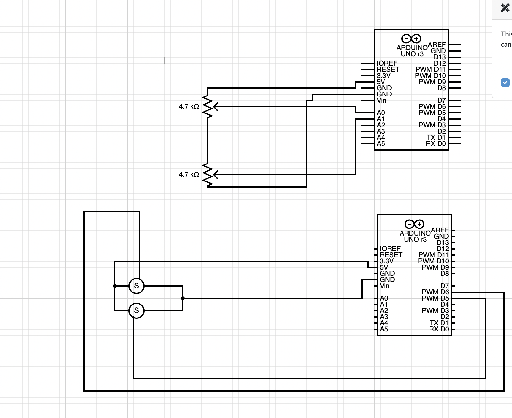

I decided to try and make a robotic arm for this week's project. The idea was originally to have a servo at the base that allowd for rotation and then a smaller servo mounted to serve as a joint and then maybe a claw at the top. I figured this would be a pretty cool project to demonstrate the input-output abilities of the arduino. I started by wiring up the servos and potentiometers in accordance with this scehmatic:  I tested it all out and everything seemed to be working ok. I then went on to build the actual arm itself, which I did out of cardboard. At first I was trying to think of a way to use a system of strights or wiring or hydrolics to move the arm, as I was worried about actually mounting a servo in the arm making the arm too heavy. I couldnt quite figure it out so I decided just to use a little servo for the upper motor in order to keep it light. I mounted the servo into the cardboard just using pressure fit and then attached the arms to the little plastic bits that come with the servos and using a screw for the other side of the arm mount. Here is the code I used:
#include
//Servo Objects
Servo Servo_0;
Servo Servo_1;
int Pot_0;
int Pot_1;
int Pot_2;
//Variable to store Servo Position
int Servo_0_Pos;
int Servo_1_Pos;
int Servo_2_Pos;
// //Variable to store Previous position values
// int Prev_0_Pos;
// int Prev_1_Pos;
// int Prev_2_Pos;
// //Variable to store Current position values
// int Current_0_Pos;
// int Current_1_Pos;
// int Current_2_Pos;
void setup()
{
Serial.begin(9600); //Serial Communication
Servo_0.attach(3);
Servo_1.attach(4);
Servo_1.write(0);
Servo_2.write(0);
}
void loop()
{
Pot_0 = analogRead(A0); // Read input from pot and store it in the Variable Pot_0.
Servo_0_Pos = map(Pot_0, 0, 1023, 1, 90); //Map servos as per the value between 0 to 1023
Pot_1 = analogRead(A1);
Servo_1_Pos = map(Pot_1, 0, 1023, 1, 90);
Servo_0.write(Servo_0_Pos);
Servo_1.write(Servo_1_Pos);
delay(10);
}
When it came to putting everything together things just stopped working. At first, the arm would work but shut off after a second or two. I think running both servos off the arduino power supply was too much and so the board was shutting off because it couldn't supply that much current. I tried using an external 5V power supply but then the servos were behaving super eratically and not responding to the pots at all. After a few hours I found out I somehow fried the board power supply as the arduino 5V was not providing 5V according to the multimeter. I ended up getting it kind of working.
I think I did a few things wrong. First, I know nothing about electronics and we didnt cover it too much in class. I think maybe what happened is that the breadboards aren't rated for such high amps and so that got fried along with the board leading to some difficult debugging. I also think that maybe all of the grounds needed to be connected together, and that I should connect in the future the servos directly to power instead of through the breadboard.